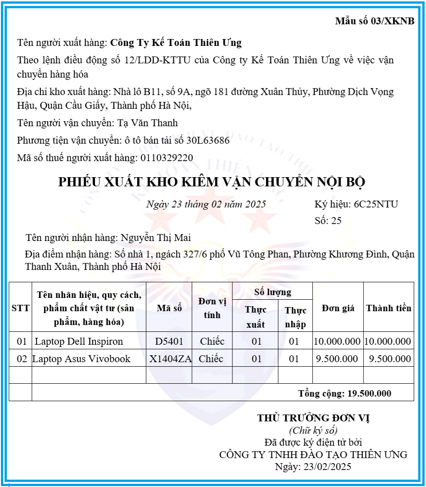

Trong bài viết này, Kế Toán Diệu Tâm sẽ cùng với các bạn đi tìm hiểu xem:
Khi nào thì sử dụng Phiếu xuất kho kiêm vận chuyển nội bộ điện tử?
Phiếu xuất kho kiêm vận chuyển nội bộ điện tử sử dụng trong những trường hợp nào?
Theo quy định tại khoản 3, điều 13 của Nghị định 123/2020/NĐ-CP (đã được sửa đổi bởi Điểm b Khoản 10 Điều 1 Nghị định 70/2025/NĐ-CP có hiệu lực từ ngày 01/06/2025) quy định về áp dụng hóa đơn điện tử, phiếu xuất kho kiêm vận chuyển nội bộ, phiếu xuất kho hàng gửi bán đại lý
Thì phiếu xuất kho kiêm vận chuyển nội bộ sẽ được sử dụng trong một số trường hợp cụ thể theo yêu cầu quản lý như sau:
1. Trường hợp nhận nhập khẩu hàng hóa ủy thác:
Nếu cơ sở kinh doanh nhận nhập khẩu ủy thác đã nộp thuế giá trị gia tăng ở khâu nhập khẩu thì sử dụng hóa đơn điện tử khi trả hàng cho cơ sở kinh doanh ủy thác nhập khẩu.
Nếu chưa nộp thuế giá trị gia tăng ở khâu nhập khẩu, khi xuất trả hàng nhập khẩu ủy thác, cơ sở nhận ủy thác lập phiếu xuất kho kiêm vận chuyển nội bộ theo quy định làm chứng từ lưu thông hàng hóa trên thị trường.
Nếu chưa nộp thuế giá trị gia tăng ở khâu nhập khẩu, khi xuất trả hàng nhập khẩu ủy thác, cơ sở nhận ủy thác lập phiếu xuất kho kiêm vận chuyển nội bộ theo quy định làm chứng từ lưu thông hàng hóa trên thị trường.
2. Trường hợp ủy thác xuất khẩu hàng hóa:
- Khi xuất hàng giao cho cơ sở nhận ủy thác, cơ sở có hàng hóa ủy thác xuất khẩu sử dụng Phiếu xuất kho kiêm vận chuyển nội bộ.
- Khi hàng hóa đã thực xuất khẩu có xác nhận của cơ quan hải quan, căn cứ vào các chứng từ đối chiếu, xác nhận về số lượng, giá trị hàng hóa thực tế xuất khẩu của cơ sở nhận ủy thác xuất khẩu, cơ sở có hàng hóa ủy thác xuất khẩu lập hóa đơn điện tử giá trị gia tăng để kê khai nộp thuế, hoàn thuế giá trị gia tăng hoặc hóa đơn điện tử bán hàng. Cơ sở nhận ủy thác xuất khẩu sử dụng hóa đơn điện tử giá trị gia tăng hoặc hóa đơn điện tử bán hàng để xuất cho khách hàng nước ngoài.
3. Khi xuất khẩu hàng hóa, dịch vụ
Cơ sở kinh doanh có hàng hóa, dịch vụ xuất khẩu (kể cả cơ sở gia công hàng hóa xuất khẩu) khi xuất khẩu hàng hóa, dịch vụ sử dụng hóa đơn điện tử: hóa đơn thương mại điện tử hoặc hóa đơn giá trị gia tăng điện tử hoặc hóa đơn bán hàng điện tử. Thời điểm lập hóa đơn thực hiện theo quy định tại khoản 1 Điều 9 Nghị định này.
Khi xuất hàng hóa để vận chuyển đến cửa khẩu hay đến nơi làm thủ tục xuất khẩu, cơ sở sử dụng Phiếu xuất kho kiêm vận chuyển nội bộ hoặc hóa đơn điện tử theo quy định làm chứng từ lưu thông hàng hóa trên thị trường.
4. Khi xuất điều chuyển hàng hóa cho các cơ sở hạch toán phụ thuộc
Tổ chức kinh doanh kê khai, nộp thuế giá trị gia tăng theo phương pháp khấu trừ xuất điều chuyển hàng hóa cho các cơ sở hạch toán phụ thuộc như các chi nhánh, cửa hàng ở khác địa phương (tỉnh, thành phố trực thuộc Trung ương) để bán hoặc xuất điều chuyển giữa các chi nhánh, đơn vị phụ thuộc với nhau; xuất hàng hóa cho cơ sở nhận làm đại lý bán đúng giá, hưởng hoa hồng, căn cứ vào phương thức tổ chức kinh doanh và hạch toán kế toán, cơ sở có thể lựa chọn một trong hai cách sử dụng hóa đơn, chứng từ như sau:
- Sử dụng hóa đơn điện tử giá trị gia tăng để làm căn cứ thanh toán và kê khai nộp thuế giá trị gia tăng ở từng đơn vị và từng khâu độc lập với nhau;
- Sử dụng Phiếu xuất kho kiêm vận chuyển nội bộ; sử dụng Phiếu xuất kho hàng gửi bán đại lý theo quy định đối với hàng hóa xuất cho cơ sở làm đại lý.
Cơ sở hạch toán phụ thuộc, chi nhánh, cửa hàng, cơ sở nhận làm đại lý bán hàng khi bán hàng phải lập hóa đơn theo quy định giao cho người mua, đồng thời lập Bảng kê hàng hóa bán ra gửi về cơ sở có hàng hóa điều chuyển hoặc cơ sở có hàng hóa gửi bán (gọi chung là cơ sở giao hàng) để cơ sở giao hàng lập hóa đơn giá trị gia tăng cho hàng hóa thực tế tiêu thụ giao cho cơ sở hạch toán phụ thuộc, chi nhánh, cửa hàng, cơ sở nhận làm đại lý bán hàng.
Trường hợp cơ sở có số lượng và doanh số hàng hóa bán ra lớn, Bảng kê có thể lập cho 05 ngày hay 10 ngày một lần. Trường hợp hàng hóa bán ra có thuế suất thuế giá trị gia tăng khác nhau phải lập bảng kê riêng cho hàng hóa bán ra theo từng nhóm thuế suất.
Cơ sở hạch toán phụ thuộc, chi nhánh, cửa hàng, cơ sở nhận làm đại lý bán hàng thực hiện kê khai nộp thuế giá trị gia tăng đối với số hàng xuất bán cho người mua và được kê khai, khấu trừ thuế giá trị gia tăng đầu vào theo hóa đơn giá trị gia tăng của cơ sở giao hàng xuất cho.
Trường hợp các đơn vị phụ thuộc của cơ sở kinh doanh nông, lâm, thủy sản đã đăng ký, thực hiện kê khai nộp thuế giá trị gia tăng theo phương pháp khấu trừ, có thu mua hàng hóa là nông, lâm, thủy sản để điều chuyển, xuất bán về trụ sở chính của cơ sở kinh doanh thì khi điều chuyển, xuất bán, đơn vị phụ thuộc sử dụng Phiếu xuất kho kiêm vận chuyển nội bộ, không sử dụng hóa đơn điện tử giá trị gia tăng.
5. Tổ chức, cá nhân xuất hàng hóa bán lưu động sử dụng Phiếu xuất kho kiêm vận chuyển nội bộ theo quy định, khi bán hàng lập hóa đơn điện tử theo quy định.
6. Kế Toán Diệu Tâm Lưu ý với các bạn như sau:
+ Trường hợp góp vốn bằng tài sản của tổ chức, cá nhân kinh doanh tại Việt Nam để thành lập doanh nghiệp thì không phải lập hóa đơn mà sử dụng các chứng từ biên bản chứng nhận góp vốn, biên bản giao nhận tài sản, biên bản định giá tài sản kèm theo bộ hồ sơ về nguồn gốc tài sản.
+ Trường hợp điều chuyển tài sản giữa các đơn vị thành viên hạch toán phụ thuộc trong tổ chức; tài sản điều chuyển khi chia, tách, hợp nhất, sáp nhập, chuyển đổi loại hình doanh nghiệp thì tổ chức có tài sản điều chuyển phải có lệnh điều chuyển tài sản, kèm theo bộ hồ sơ nguồn gốc tài sản và không phải lập hóa đơn.
+ Trường hợp tài sản điều chuyển giữa các đơn vị hạch toán độc lập hoặc giữa các đơn vị thành viên có tư cách pháp nhân đầy đủ trong cùng một tổ chức, thì tổ chức có tài sản điều chuyển phải lập hóa đơn điện tử như bán hàng hóa.

7. Nội dung trên phiếu xuất kho kiêm vận chuyển nội bộ:
Theo điểm g, khoản 14 điều 10 của Nghị định số 123/2020/NĐ-CP thì:
g) Đối với Phiếu xuất kho kiêm vận chuyển nội bộ thì trên Phiếu xuất kho kiêm vận chuyển nội bộ thể hiện các thông tin liên quan lệnh điều động nội bộ, người nhận hàng, người xuất hàng, địa điểm kho xuất, địa điểm nhận hàng, phương tiện vận chuyển. Cụ thể: tên người mua thể hiện người nhận hàng, địa chỉ người mua thể hiện địa điểm kho nhận hàng; tên người bán thể hiện người xuất hàng, địa chỉ người bán thể hiện địa điểm kho xuất hàng và phương tiện vận chuyển; không thể hiện tiền thuế, thuế suất, tổng số tiền thanh toán.
Đối với Phiếu xuất kho hàng gửi bán đại lý thì trên Phiếu xuất kho hàng gửi bán đại lý thể hiện các thông tin như hợp đồng kinh tế, người vận chuyển, phương tiện vận chuyển, địa điểm kho xuất, địa điểm kho nhận, tên sản phẩm hàng hóa, đơn vị tính, số lượng, đơn giá, thành tiền. Cụ thể: ghi số, ngày tháng năm hợp đồng kinh tế ký giữa tổ chức, cá nhân; họ tên người vận chuyển, hợp đồng vận chuyển (nếu có), địa chỉ người bán thể hiện địa điểm kho xuất hàng.
a) Ký hiệu mẫu số hóa đơn điện tử là ký tự có một chữ số tự nhiên là các số tự nhiên 1, 2, 3, 4, 5, 6, 7, 8, 9 để phản ánh loại hóa đơn điện tử như sau:
- Số 6: Phản ánh các chứng từ điện tử được sử dụng và quản lý như hóa đơn gồm phiếu xuất kho kiêm vận chuyển nội bộ điện tử, phiếu xuất kho hàng gửi bán đại lý điện tử;
b) Ký hiệu hóa đơn điện tử là nhóm 6 ký tự gồm cả chữ viết và chữ số thể hiện ký hiệu hóa đơn điện tử để phản ánh các thông tin về loại hóa đơn điện tử có mã của cơ quan thuế hoặc hóa đơn điện tử không có mã, năm lập hóa đơn, loại hóa đơn điện tử được sử dụng. Sáu (06) ký tự này được quy định như sau:
- Ký tự đầu tiên là một (01) chữ cái được quy định là C hoặc K như sau: C thể hiện hóa đơn điện tử có mã của cơ quan thuế, K thể hiện hóa đơn điện tử không có mã;
- Hai ký tự tiếp theo là hai (02) chữ số Ả rập thể hiện năm lập hóa đơn điện tử được xác định theo 2 chữ số cuối của năm dương lịch. Ví dụ: Năm lập hóa đơn điện tử là năm 2025 thì thể hiện là số 25; năm lập hóa đơn điện tử là năm 2026 thì thể hiện là số 26;
- Một ký tự tiếp theo là một (01) chữ cái được quy định là T, D, L, M, N, B, G, H, X thể hiện loại hóa đơn điện tử được sử dụng, cụ thể:
+ Chữ N: Áp dụng đối với phiếu xuất kho kiêm vận chuyển nội bộ điện tử;
+ Chữ B: Áp dụng đối với phiếu xuất kho hàng gửi bán đại lý điện tử;
- Hai ký tự cuối là chữ viết do người bán tự xác định căn cứ theo nhu cầu quản lý. Trường hợp người bán sử dụng nhiều mẫu hóa đơn điện tử trong cùng một loại hóa đơn thì sử dụng hai ký tự cuối nêu trên để phân biệt các mẫu hóa đơn khác nhau trong cùng một loại hóa đơn. Trường hợp không có nhu cầu quản lý thì sử dụng hai ký tự YY;
- Tại bản thể hiện, ký hiệu hóa đơn điện tử và ký hiệu mẫu số hóa đơn điện tử được thể hiện ở phía trên bên phải của hóa đơn (hoặc ở vị trí dễ nhận biết);
- Ví dụ thể hiện các ký tự của ký hiệu mẫu hóa đơn điện tử và ký hiệu hóa đơn điện tử:
+ “6K25NAB” - là phiếu xuất kho kiêm vận chuyển nội bộ điện tử loại không có mã được lập năm 2025 do doanh nghiệp đăng ký với cơ quan thuế;
+ “6K25BAB” - là phiếu xuất kho hàng gửi bán đại lý điện tử loại không có mã được lập năm 2025 do doanh nghiệp đăng ký với cơ quan thuế;